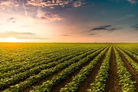

A evolução da agricultura garantiu a segurança alimentar da população brasileira, a criação de indústrias, a geração de emprego e renda. A agricultura é responsável por 21 % dos empregos formais no Brasil e responsavel pela a boa alimentação do povo brasileiro. Em 2022, a agricultura participou com 24,8% do PIB e 47,6% das exportações brasileira. Ou seja, ela é muito boa, e muito preciosa #amoagro.
